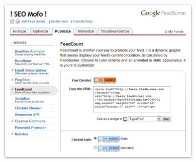

Since I started writing this blog, my number of subscribers has been increasing steadily. If you average it out, I’ve been getting about 2-3 new subscriptions every day. That’s not bad, if you ask me. If I keep this up, I’ll surpass Matt Cutts’ total in only 106 years! Well…that’s assuming his number of subscriptions stays exactly the same until then.
But anyways…I was looking at my subscriber stats in FeedBurner today, and I thought to myself, “I kinda want to put one of these custom FeedCount chicklets in my side bar…”

You see…one of the things I’ve noticed about human nature is that most people don’t want to think for themselves. They’d rather take the beaten path than blaze a new trail. So when you publish your number of subscribers, new visitors to your site will look at that number and think, “Lot’s of people are subscribed to this blog, so it must be good. I too will subscribe to this blog!”
The reason I like the idea of putting one of these custom FeedBurner icons on my site is because it allows me to show the World how popular I am. It’s a subtle way for me to peer-pressure my visitors into subscribing to my blog–like saying, “Come on, man…everybody’s doin’ it!”
The problem is…my FeedBurner count isn’t really high enough to pull off said psychological trickery. People might look at my subscription total and think, “WTF? This guy only has 361 subscribers? That’s weak. Screw this, I’m outta here.”
Therefore, I needed a way to…shall we say…embellish my résumé.
I considered hijacking someone else’s stats. For example, I could take the HTML code that FeedBurner gave me and simply change the name in the image src location…
<p>
<a href="http://feeds.seomofo.com/seomofo">
<img src="http://feeds.feedburner.com/~fc/seomofoseomoz?bg=FF6600&fg=000000&anim=0" height="26" width="88" style="border:0" alt="" />
</a>
</p>
…but the problem with that is it doesn’t let me see my actual subscriber count. Ideally, I’d like to just add a digit in front of my real number. I could have made a fake digit and absolute-positioned it over my chicklet, but that would limit me to a static .gif image and I really wanted to use one of the fancy animated .gif images to draw people’s attention to my subscribe link.
Finally, I thought of the perfect solution…
I started with the static chicklet that FeedBurner gave me:
Then I used Photoshop to pull apart the animated chicklet that FeedBurner gave me. I used the layers from that file to create my own animated .gif, except I added a 5 and left transparent holes where the static chicklet numbers could show through:
Finally, I used CSS to absolute position my animated .gif on top of the static FeedBurner chicklet:
…and voilá! My blog subscriptions just increased by 5,000!
Now that you’ve seen how it’s done, go ahead and make yourself a fake FeedBurner icon. I’ll even give you a head start by providing all the digits for you:
Oh, and one last thing…be sure to subscribe to my blog, if you haven’t already. Come on…everybody’s doing it.